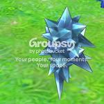
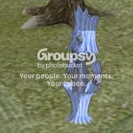
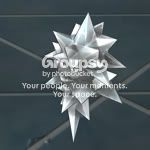
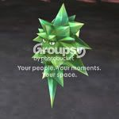

Rock
Gangan
Level : 36
HP : 600
EXP / Job EXP : 459 / 262
Attribute :
 Personality
Personality : Non Active
Map :
Bed Rock of Soul /
Volcano
Item : Phosphorus Dust / Gunpowder / Riped Magical Book / Miso Archen /
Great Pebble /
Asphalt /
Kankan Stamp

Blue Crystal Archen
Level : 36
HP : 1,200
EXP / Job EXP : 495 / 563
Attribute :
 Personality
Personality : Chain Special Reaction
Map :
Waterlayer
Item : Ice Can / Water Summon Stone / Mystery Crystal /
Blue Crystal 1 /
Orihalcon

Crystal Archen
Level : 55
HP : 2,000
EXP / Job EXP : 952 / 1,037
Attribute :
Personality : Chain Reaction
Map :
Main Floor 3F /
Light Tower A-7F
Item : Alloy Stone 5 / Steel Thorn / Crystal /
Platinum Lump /
Metal Achen Thorn
 Toinclue
Level
Toinclue
Level : 66
HP : 2,250
EXP / Job EXP : 2,175 / 1,800
Attribute :
 Personality
Personality : Chain Reaction
Map :
Around Light Tower /
Lower Light Tower
Item : Alloy Stone 5 / Steel Thorn / Miso Archen / Alloy Stone 3 /
Achen Fossil

Greysure
Level : 76
HP : 4,200
EXP / Job EXP : 4,505 / 3,740
Attribute :
 Personality
Personality : Non Active
Map :
Main Floor 1F /
Light Tower A-10F
Item : Steel Thorn / Alloy Stone 5 / Alloy Stone 2 / Orihacon /
Achen Fossil
 Non Crystal Archen
Level
Non Crystal Archen
Level : 83
HP : 6,300
EXP / Job EXP : 3,995 / 4,250
Attribute :
 Personality
Personality : Non Active
Map :
Light Tower A-13F - A-16F
Item : Great Pebble / Giant Knot / Riped Magical Book / Achen Fossil /
Orihacon
Fernis
Level : 88
HP : 6,800
EXP / Job EXP : 4,250 / 4,080
Attribute :
 Personality
Personality : Non Active
Map :
Light Tower A-17F - A-20F
Item : Magnet / Lead Nugget / Riped Magical Book / Skull /
Orihacon

Green Crystal Archen
Level : 92
HP : 12,000
EXP / Job EXP : 5,250 / 5,100
Attribute :
Personality : Chain Special Reaction
Map :
Maimai Ancient Sun Deck
Item : Herb Candy / Keseran Pasaran / Toxin / Riped Magical Book /
Green Crystal 1 /
Light Green Achen Thorn
 Stone Turtle
Level
Stone Turtle
Level : 40
HP : 5,000
EXP / Job EXP : 825 / 975
Attribute :
Personality : Chain Special Reaction
Map :
Waterlayer
Item : Veggu Juice / Mold / Tortoise Shell / Four Leaves Clover / Turtle Ruck(White)
 Rock Turtle
Level
Rock Turtle
Level : 100
HP : 550,000
EXP / Job EXP : 36,000 / 48,000
Attribute :
Personality : Non Active
Map :
Waterlayer
Item :
Mold / Heart Ruby / Tortoise Shell / Turtle Ruck(Black) /
Shoulder Devil Boost
 Larva Pururu
Level
Larva Pururu
Level : 32
HP : 350
EXP / Job EXP : 235 / 289
Attribute :
Personality : Non Active
Map :
Bed Rock of Soul /
Volcano /
Iron South Highway
Item : Seriko / Row / Mutant /
Alloy Stone 5 / Mold /
Larva Pururu Stamp
Cocoon
Level : 8
HP : 130
EXP / Job EXP : 27 / 45
Attribute :
Personality : Non Active
Map :
Warship Island [Dominion] /
Hell Desert /
Golden Bridge
Item : Hoka Stone / Riped Magical Book / Copper Lump / Power Crystal
 Flame Cocoon
Level
Flame Cocoon
Level : 22
HP : 580
EXP / Job EXP : 105 / 113
Attribute :
Personality : Non Active
Map :
Warship Island(Night) /
Step Canyon
Item : Gunpowder / Riped Magical Book / Pritolium / Power Crystal
 Praz Cocoon
Level
Praz Cocoon
Level : 30
HP : 1,358
EXP / Job EXP : 375 / 405
Attribute :
Personality : Non Active
Map :
Step Canyon (Night) /
Hell Desert(Night)
Item : Hoka Stone / Riped Magical Book / Copper Lump / Power Crystal
hock: